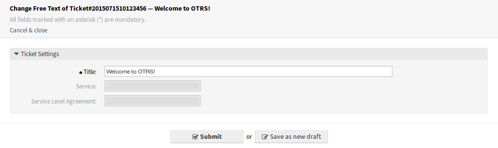

Ticket Zoom¶
After installation of the package some new fields will be available in the Free Fields window of Ticket Zoom screen.

Free Fields Window
New Fields¶
- Service
- Select a service for the new ticket.
- Service Level Agreement
- Select a service level agreement for the new ticket.
See also
To make these fields mandatory, enable these system configuration settings:
Ticket::Frontend::AgentTicketFreeText###ServiceMandatoryTicket::Frontend::AgentTicketFreeText###SLAMandatory